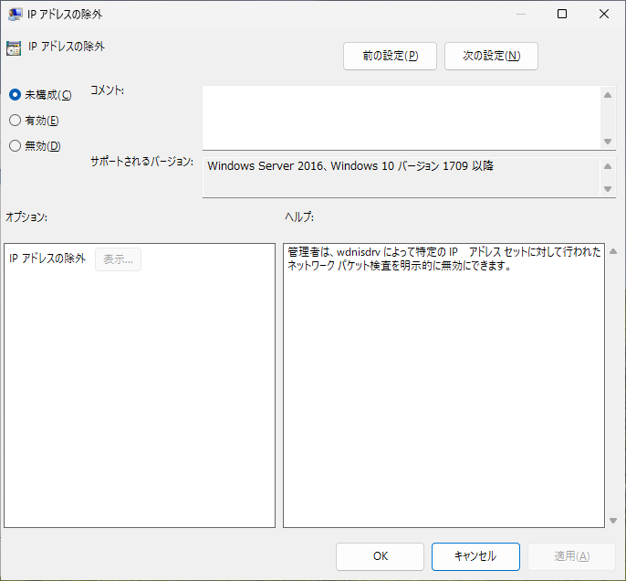
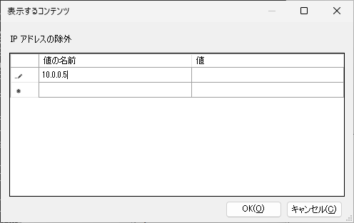
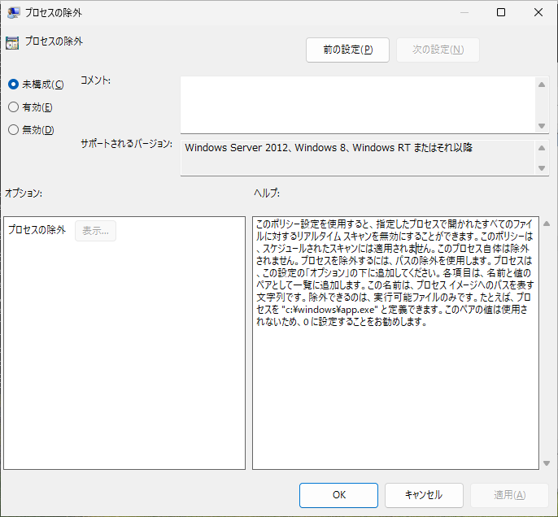
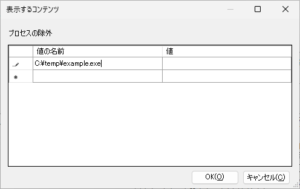
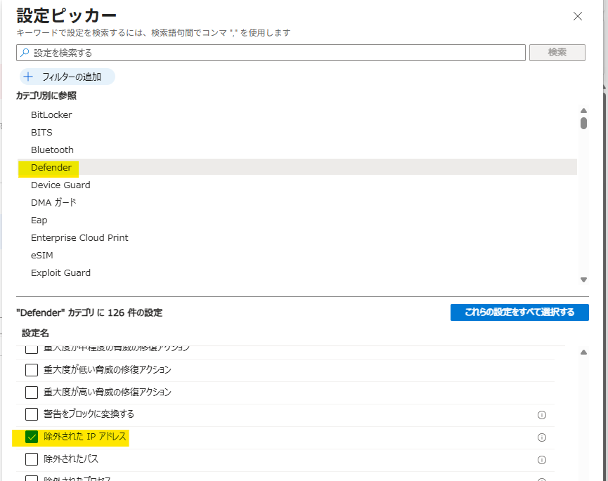

本記事では、Microsoft Defender for Endpoint (MDE) のネットワーク保護機能に関連して、ブロックイベントが記録されないにもかかわらずアプリケーション通信に影響が生じる場合の切り分け手順と対処方法をご案内します。
ネットワーク保護の一般的なトラブルシューティングについては、まず以下の公開情報をご確認ください。
参考情報：ネットワーク保護に関する問題のトラブルシューティング - Microsoft Defender for Endpoint | Microsoft Learn
本記事の内容
ネットワーク保護の概要
ネットワーク保護がアプリケーションに影響する可能性について
ネットワーク保護 (Network Protection) は、Microsoft Defender ウイルス対策 (MDAV) の一部として OS レベルでネットワーク通信を監視し、危険な宛先へのアクセスをブロックする機能です。
この機能では TCP、HTTP、HTTPS (TLS) など複数のプロトコルを検査します。
そのため、ネットワーク保護機能をブロックモードで運用している環境では、通信データ量や通信頻度が多いアプリケーションで、遅延や瞬断が発生する可能性があります。
ネットワーク保護機能をブロックモードで有効化している端末で上記のような問題が発生する場合は、ネットワーク保護を一時的に無効化することにより、当該機能の影響有無を確認できます。
ネットワーク保護が疑われる場合の切り分け手順
アプリケーション通信の問題に対してネットワーク保護の関与が疑われる場合は、以下の手順で確認します。
ネットワーク保護の設定値を確認する
PowerShell で以下のコマンドを実行し、現在の設定値を確認します。
1 | Get-MpPreference | Select-Object EnableNetworkProtection |
EnableNetworkProtection の主な値は以下のとおりです。
0: 無効1: 有効2: 監査
ネットワーク保護を一時的に無効化して動作を確認する
ネットワーク保護が原因かどうかを判断するため、管理者権限で起動した PowerShell で以下のコマンドを実行して一時的に無効化します。
1 | Set-MpPreference -EnableNetworkProtection Disabled |
無効化後、問題が発生していたアプリケーションの通信が正常化するかを確認します。
また、通信テストの完了後は、以下の手順でネットワーク保護を再有効化できます。
1 | Set-MpPreference -EnableNetworkProtection Enabled |
ヒント
Set-MpPreference 以外のネットワーク保護機能の設定を変更する方法については以下の公開情報をご参照ください。
参考情報：ネットワーク保護を有効にする - Microsoft Defender for Endpoint | Microsoft Learn
ネットワーク保護を無効化した状態で通信の問題が解消する場合、ネットワーク保護が当該事象に関与している可能性があると考えられるため、以降の手順をお試しください。
ネットワーク保護機能に起因する通信の問題の対処方法
ブロックモードで稼働するネットワーク保護機能に起因する一部のアプリケーションの通信の遅延や瞬断については、以下の手順で IP アドレスもしくはプロセスの除外設定を追加することで解消できる可能性があります。
IP アドレスを除外する
以下の PowerShell コマンドを使用することで、特定のアプリケーションが使用する IP アドレスを除外できます。
IP アドレスを除外する例:
1 | Add-MpPreference -ExclusionIpAddress <IP アドレス> |
複数の IP アドレスを指定する例:
1 | Add-MpPreference -ExclusionIpAddress <IP アドレス 1>,<IP アドレス 2>,<IP アドレス 3> |
また、IP アドレスの除外はグループポリシーで設定を行うことも可能です。
IP アドレスの除外をグループポリシーで設定する場合は以下の項目を使用します。
- パス：[管理用テンプレート] > [Windows コンポーネント] > [Microsoft Defender ウイルス対策] > [除外]
- 項目：IP アドレスの除外

除外対象の IP アドレスについては、”値の名前” に設定を登録します。以下は、IP アドレス 10.0.0.5 を除外指定する場合の例です。

プロセス除外設定を使用する
プロセス除外を行うことで指定したプロセスから発生する動作を除外することができます。
これにより、アプリケーションの問題が改善する可能性があります。IP アドレスの除外で効果が得られない場合には、プロセス除外もお試しください。
プロセス除外を設定する例:
1 | Add-MpPreference -ExclusionProcess "<プロセスの完全パス または イメージ名>" |
グループポリシーで設定する場合は、以下のパスを使用します。
- パス: [管理用テンプレート] > [Windows コンポーネント] > [Microsoft Defender ウイルス対策] > [除外]
- 項目: プロセスの除外

IP アドレスの除外と同様に、除外対象のプロセスの完全パスやプロセス名を “値の名前” に指定することで設定を行うことができます。

除外設定の適用状況の確認
以下のコマンドで、除外設定が反映されているか確認できます。
1 | Get-MpPreference | Select-Object ExclusionIpAddress,ExclusionProcess |
なお、MDM 管理環境では、PowerShell による設定変更が制限される場合があります。
Intune を利用している場合は、デバイス構成プロファイルやエンドポイント セキュリティ ポリシーに加え、設定カタログの利用もご検討ください。
MDAV の IP アドレス除外は Intune のエンドポイント セキュリティ ポリシーで直接構成できないため、設定カタログの Defender カテゴリにある 除外された IP アドレス の設定を使用します。

まとめ
本記事では、ネットワーク保護のイベントが記録されない場合でも、ネットワーク保護の一時無効化と再有効化を用いた切り分けにより、影響有無を確認する方法をご紹介しました。
また、ネットワーク保護が原因と判明した場合の対処として、MDAV の IP アドレス除外およびプロセス除外の設定方法についてもご案内しました。